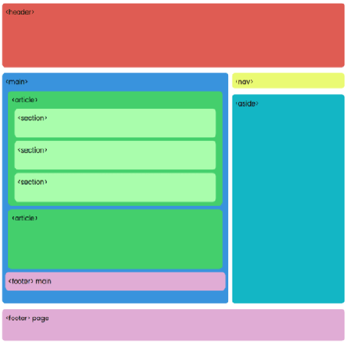
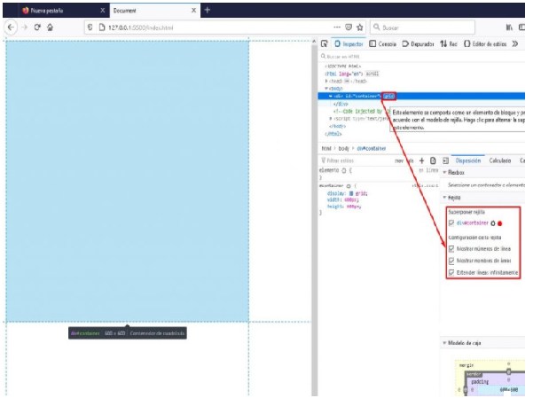

Proposito del Sitio
El propósito de este sitio web es el de poder identificar una etiqueta semántica, y aplicar el modelo CSS Grid Layout.
Las etiquetas semánticas ayudan a definir la estructura del documento para que las páginas web sean mejor indexadas. Una etiqueta semántica se califica si su significado nos informa de lo que trata su contenido
CSS Grid Layout es un sistema de rejilla en 2 dimensiones, creado dentro del lenguaje CSS. Es un estándar, lo que quiere decir que no necesitas nada para que el navegador lo entienda
Etiquetas Semanticas
Las etiquetas semánticas ayudan a la implementación de los estándares de la Web Semántica, cuya finalidad es hacer el contenido de internet legible para aplicaciones informáticas.

DEV Community.2021.Etiquetas semánticas de HTML5.[online] Available at: CSS Grid Layout
Es un sistema de rejilla en 2 dimensiones, creado dentro del lenguaje CSS. Es un estándar, lo que quiere decir que no necesitas nada para que el navegador lo entienda.

DEV Community. 2021. Etiquetas semánticas de HTML5. [online] Available at: [Accessed 23 September 2021].